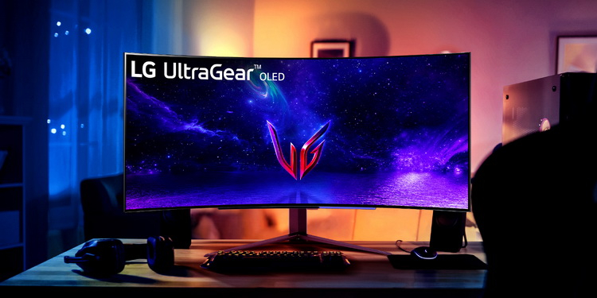

LG и MSI представили сверхширокоформатные изогнутые игровые OLED-мониторы
Компании LG и MSI представили сверхширокоформатные изогнутые игровые OLED-мониторы. Сразу оба производителя утверждают, что их новинки являются первыми подобными дисплеями в данном классе. LG анонсировала 45-дюймовую модель UltraGear 45GR95QE-B, компания MSI, в свою очередь, готовит к выпуску 49-дюймовую модель под названием Project 491C